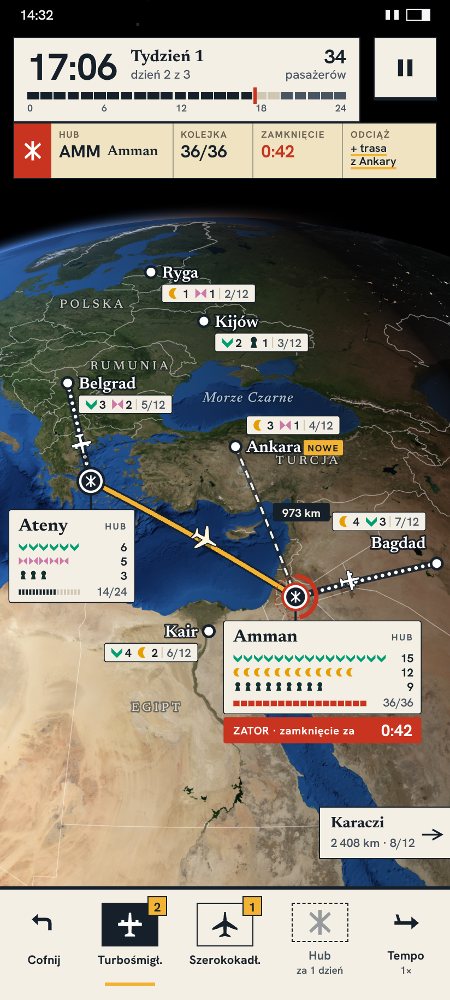
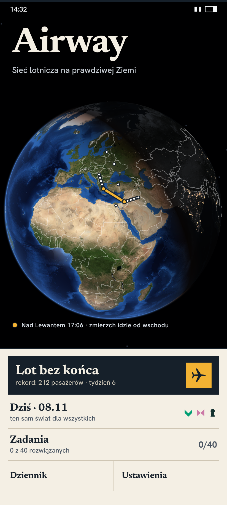
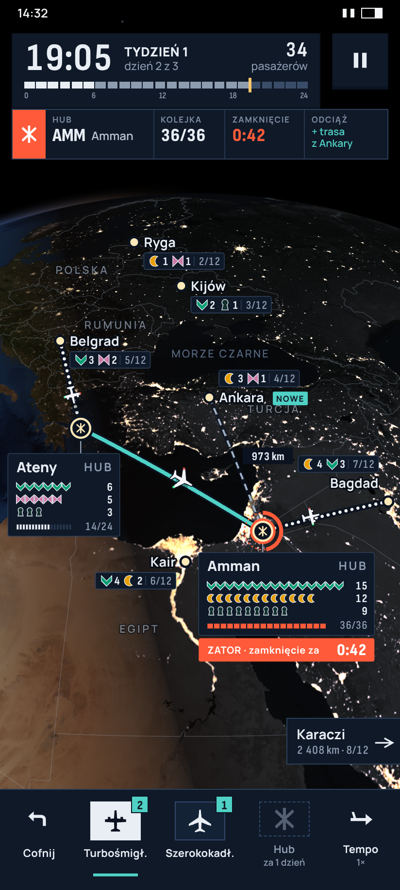
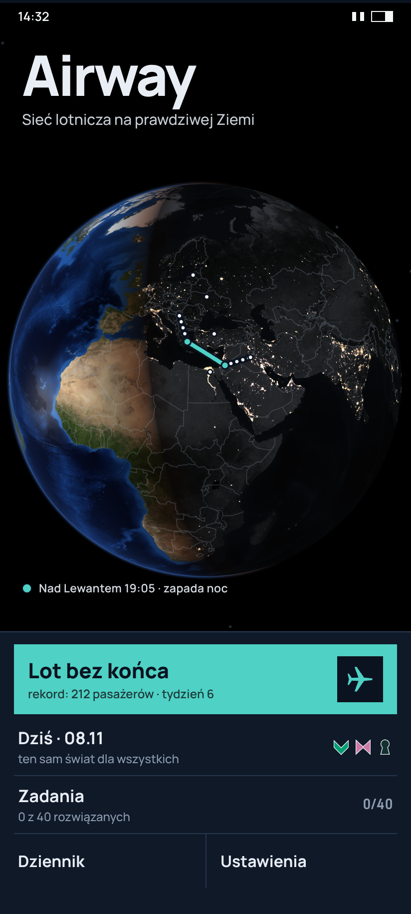

Ta sama sytuacja i ten sam układ: tydzień 1, dzień 2 z 3, 34 pasażerów; Ateny i Amman to huby, Amman ma zator (0:42), Ankara jest nowa, gracz rysuje trasę Ankara–Amman. Globus: three.js, NASA Blue Marble NG i Black Marble 2016 (domena publiczna), terminator od słońca. Kadry 412×915 pt (PNG 824×1830).



